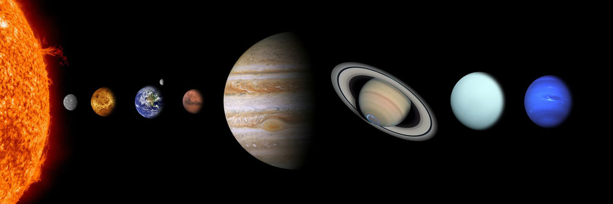

Click on the sun or on one of the planets to get more information:
A solar system is a star and all of the objects that travel around it’s planets, moons, asteroids, comets and meteoroids. Most stars host their own planets, so there are likely tens of billions of other solar systems in the Milky Way galaxy alone. Solar systems can also have more than one star. These are called binary star systems if there are two stars, or multi-star systems if there are three or more stars.